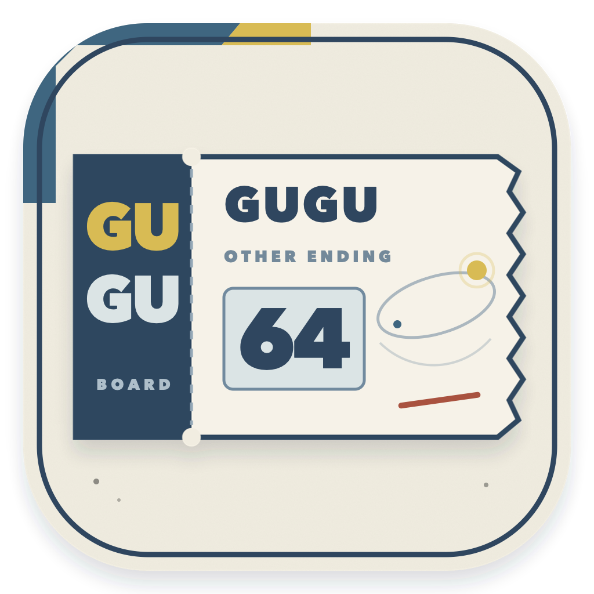

MANUSCRIPT INDEX / DEMO 02
项目管理
01
CURRENT FOLIO · COMPLETE
海的女儿新编
一柄匕首、一场远征与一纸海陆盟约5 / 5 章 · 约 15,000 字
第一章
ROUTE / RELATION / PAYOFF
航线图
当前已发生尚未发生
“显示未来”只读取静态演示数据。正式产品中，未来事件在完成二次确认前不会发送给浏览器。

GuguSTATIC STORY ROUTEMANUSCRIPT INDEX / DEMO 02
CURRENT FOLIO · COMPLETE
ROUTE / RELATION / PAYOFF
“显示未来”只读取静态演示数据。正式产品中，未来事件在完成二次确认前不会发送给浏览器。